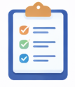

Gestion de tareas centralizada
NovaDesk permite organizar, asignar y supervisar tareas desde un único panel de control. Los
equipos
pueden definir prioridades, fechas límite y responsables, lo que mejora la planificación, reduce
errores y garantiza un seguimiento claro del trabajo diario.

Colaboración en tiempo real
La plataforma facilita la comunicación entre los miembros del equipo mediante herramientas
integradas
que permiten compartir información, comentar tareas y coordinar actividades sin importar la
ubicación geográfica, optimizando el trabajo remoto y colaborativo.

Seguimiento de productividad
NovaDesk ofrece métricas claras y reportes visuales que permiten analizar el rendimiento
individual y
grupal. Estas estadísticas ayudan a identificar áreas de mejora, optimizar procesos y tomar
decisiones basadas en datos reales.

Acceso multiplataforma
El servicio está disponible desde cualquier dispositivo con conexión a internet, permitiendo a
los
usuarios trabajar desde computadoras, tablets o teléfonos móviles sin perder funcionalidad ni
acceso
a la información.